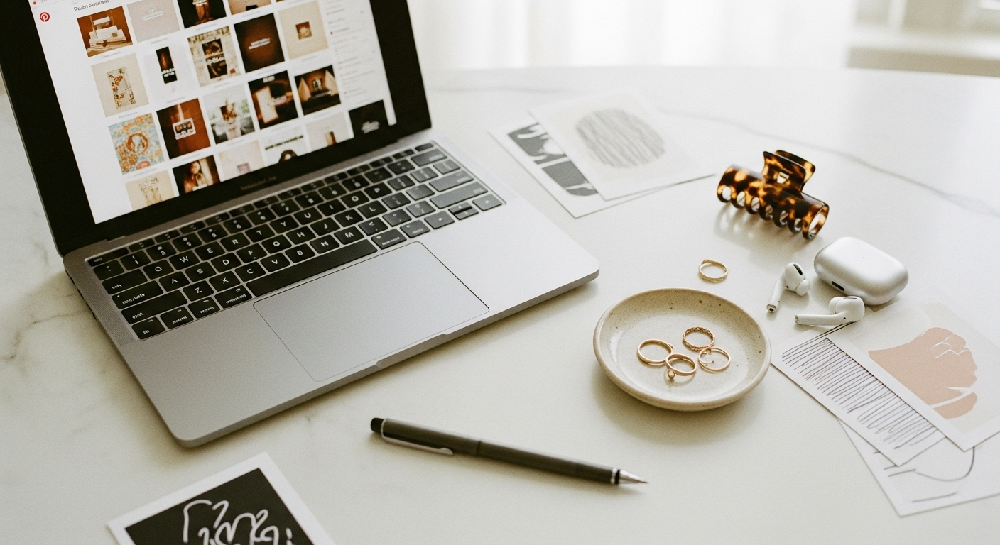
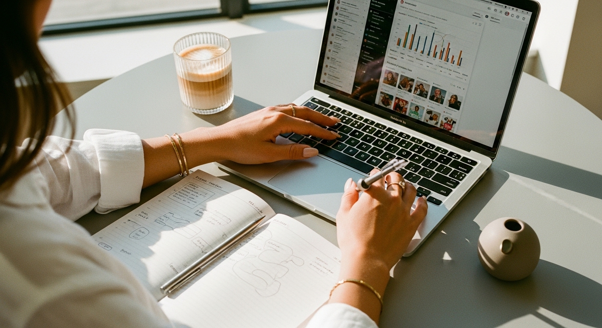

pinterest marketing


PINTEREST MARKETING: THE COMPLETE GUIDE FOR COACHES AND SERVICE PROVIDERS WHO WANT TRAFFIC THAT ACTUALLY CONVERTS
You've been showing up on Instagram for months. Maybe years. You post, you engage, you watch your reach fluctuate based on whatever the algorithm decided to do that week. And every time you take a break - even a short one - the momentum disappears.
Meanwhile, you keep hearing about Pinterest. You know people are using it to drive traffic. You've probably even created an account at some point, pinned a few things, then wandered away because it felt like another platform demanding your time without giving much back.
Here's what nobody told you: Pinterest is not social media. It's a visual search engine. And that single distinction changes everything about how you should be using it.
When someone opens Instagram, they're scrolling to pass time. When someone opens Pinterest, they're searching with intent. They're looking for solutions, ideas, products, and services. 85% of weekly Pinterest users have made a purchase based on Pins they saw from brands. More than half of all users consider Pinterest a shopping destination.
This isn't about getting likes or building a follower count. Pinterest marketing is about creating content that gets found by people actively searching for what you offer - and keeps working for months or years after you publish it.
If you're a coach, service provider, or small business owner who wants traffic that doesn't evaporate the moment you stop posting, this is the platform you've been overlooking.
WHY PINTEREST WORKS DIFFERENTLY THAN EVERYTHING ELSE YOU'VE TRIED
The frustration with most marketing platforms comes down to one thing: the work disappears.
You spend an hour writing an Instagram caption. It gets engagement for 48 hours - maybe less - and then it's buried. Facebook posts have an average lifespan of about 5 hours. Stories vanish in 24 hours. Even the content that performs well fades into your archive, never to be seen again unless someone deliberately scrolls back through your feed.
Pinterest operates on completely different rules.
A single Pin can drive traffic to your website for months. Sometimes years. I've seen Pins from 2022 still bringing in clicks in 2025 because they rank for searches people are still making. The content compounds instead of expiring.
This matters enormously when you're running a business and can't spend 3 hours a day creating content. You need your marketing to work while you're with clients, while you're sleeping, while you're taking actual time off.
Pinterest has 537 million monthly active users as of early 2026 - up 7.8% from the previous year. These aren't passive scrollers. They're planners. They're savers. They're people actively building collections of things they want to buy, try, or hire.
And here's something the other marketing guides don't emphasize enough: Gen Z is now the dominant demographic on Pinterest. 39% of Gen Z uses the platform - leading all other generations. If you've been thinking Pinterest is only for "millennial moms planning weddings and nurseries," you're operating on outdated information. The audience has expanded dramatically.
For coaches and service providers specifically, this creates an interesting opportunity. Your competitors are fighting for attention on Instagram and TikTok, where content dies fast and algorithms are unpredictable. Meanwhile, Pinterest users are actively searching for terms like "how to find a life coach," "business coach for women," "virtual assistant services," and "online course recommendations."
They're not being interrupted by your content. They're searching for it.
THE FUNDAMENTAL SHIFT: THINKING LIKE A SEARCH ENGINE, NOT A SOCIAL PLATFORM
Most people approach Pinterest the way they approach Instagram. They focus on aesthetics. They try to build a following. They measure success by engagement metrics.
This is exactly backwards.
Pinterest success is measured by clicks and saves - not likes, comments, or follower counts.
When someone saves your Pin, they're telling Pinterest's algorithm: "this is valuable, show it to more people like me." When someone clicks through to your website, that's a potential client entering your world. These are the only numbers that matter.
Keywords are everything on Pinterest. Unlike Instagram where hashtags are supplementary and the algorithm tries to guess what you might like, Pinterest works more like Google. Users type searches into a search bar. The algorithm matches those searches to Pins that contain relevant keywords in specific places:
- Your Pin title
- Your Pin description
- Your board titles
- Your board descriptions
- Your profile name and bio
If you're a business coach and none of your content contains the words "business coach," you won't show up when people search for one. It sounds obvious, but I see this mistake constantly - beautiful Pins with clever, vague titles that don't match what anyone is actually searching for.
How do you find out what people are searching for?
Pinterest tells you directly. Open the Pinterest search bar and start typing your topic. Watch what auto-suggests. Type "business coach" and you'll see suggestions like "business coach aesthetic," "business coach tips," "business coach for women over 40." These aren't random - they're actual searches being made on the platform right now.
This is your keyword research. Write these down. Use them in your Pin titles and descriptions. Build boards around them. This single practice will do more for your Pinterest results than any amount of aesthetic perfection.
SETTING UP YOUR PINTEREST FOR ACTUAL BUSINESS RESULTS
Before you create a single Pin, your foundation needs to be right. A broken foundation means everything you build on top of it underperforms.
Step 1: Convert to a Business Account
If you're still using a personal account, you're missing critical features. Go to business.pinterest.com and either convert your existing account or create a new one. A business account gives you:
- Pinterest Analytics (so you can see what's working)
- Rich Pins (which pull information directly from your website)
- Ad capabilities (for when you're ready to amplify)
- Audience insights (demographics of who's engaging)
This takes about 5 minutes and costs nothing.
Step 2: Claim and Verify Your Website
In your Pinterest settings, find the "Claim" section and add your website URL. You'll need to add an HTML tag or upload a small file to verify ownership. This does two important things: adds a credibility checkmark to your profile, and enables you to see analytics for any Pins that link to your site - even Pins created by other people.
Step 3: Enable Rich Pins
Rich Pins automatically pull your blog post titles, descriptions, and metadata directly from your website. This means your Pins stay updated if you change something on your site, and they display more professionally with additional context.
Apply for Rich Pins at developers.pinterest.com/tools/url-debugger. Paste a link to any blog post and Pinterest will validate your setup. Once approved, all your future Pins automatically become Rich Pins.
Step 4: Optimize Your Profile
Your profile is searchable. Keywords here matter.
Username: Include your name plus a niche keyword. Example: "Sarah | Career Coach for Women" rather than just "Sarah Smith"
Display name: This is different from your username and carries significant search weight. Use your primary keyword phrase. "Career Change Coach | Job Search Tips" will perform better than just your business name.
Bio: You have 160 characters. Lead with what you help people do, then include 2-3 keywords naturally. Skip the generic "helping women live their best lives" - be specific about the transformation you provide.
Profile photo: Professional headshot or brand logo. Match what you use on other platforms for recognition.
Most business owners skip these optimization steps and then wonder why their Pins don't get seen. The algorithm is looking at everything - your profile included.
BOARD ARCHITECTURE: THE HIDDEN RANKING FACTOR
Your boards are not just organizational tools. They're indexing opportunities. Every board you create is another chance to rank for specific searches.
I see two common mistakes here:
Mistake 1: Too few boards. You create three generic boards and dump everything into them. This tells the algorithm almost nothing about what your content covers or who it's for.
Mistake 2: Cute board names that contain zero keywords. A board called "Vibes" or "Inspo" or "Things I Love" does nothing for your searchability. The algorithm doesn't understand vibes. It understands words.
Here's how to structure your boards strategically:
Create 8-12 niche-specific boards. Each board should represent one specific topic your audience searches for.
Examples for a life coach:
- "Career Change Tips for Women Over 35"
- "Confidence Building Exercises"
- "Work-Life Balance Ideas"
- "Interview Preparation Strategies"
- "Finding Your Purpose at Work"
- "Mindset Shifts for Professional Women"
Examples for a virtual assistant:
- "Podcast Management Tips"
- "How to Start a Podcast"
- "Email Management Systems"
- "Social Media Scheduling Tools"
- "Productivity for Entrepreneurs"
Notice how every board title contains keywords someone might actually search for.
Write descriptions for every board. You have space for 500 characters. Use 2-3 sentences that naturally include related keywords. Think of this as a mini-pitch for why this board exists and who it's for.
Create board covers. Use branded, cohesive images that match your visual identity. This doesn't affect rankings but does affect whether someone decides to follow your board or trust your brand.
Mix your board types:
- Core topic boards (3-4): Your main expertise areas
- Adjacent interest boards (3-4): What your ideal client also cares about
- Seasonal boards (2-3): Topics that peak at certain times of year
- Inspiration boards (1-2): Lifestyle content that humanizes your brand
If you're a business coach, your adjacent boards might cover productivity, home office setup, or entrepreneur mindset - topics your audience researches even though they're not directly about coaching.
CREATING PINS THAT GET CLICKS AND SAVES
A Pin has one job: make someone want to click through to your website.
This sounds simple, but most Pins fail because they prioritize looking pretty over being useful. Pinterest users are searching for solutions. Your Pin needs to clearly communicate that you have one.
Anatomy of a High-Performing Pin:
Visual: Vertical format (2:3 ratio - 1000x1500 pixels works well). Clear, high-quality image. Text overlay that's readable on mobile. Branded colors and fonts for recognition across your content.
Title: 50-100 characters. Include your primary keyword in the first half. Benefit-led or problem-led. No clickbait, no unnecessary question marks.
Strong title examples:
- "Start your coaching business with this complete branding kit"
- "5 signs you need a website for your service business"
- "How to attract clients without posting every day"
- "Career change at 40: what no one tells you"
Weak titles that won't perform:
- "My thoughts on branding" (too vague)
- "Check this out!!!" (no keywords, no benefit)
- "Coaching stuff" (lazy and unsearchable)
Description: 150-300 characters. Lead with the main benefit or pain point. Include 2-3 natural keywords. End with a soft call-to-action like "Click to read more" or "Save for later."
Good description example: "This branding kit gives you a complete visual identity - logo, colors, fonts, and templates - so your coaching business looks professional from day one. Click to browse!"
The Multiple Pin Strategy
Here's something that transformed my Pinterest results: one piece of content can (and should) have multiple Pins.
A single blog post can fuel 5-10 different Pin designs. Each Pin has a different image, a different title angle, and emphasizes a different benefit. This isn't spammy - it's smart. Different people search for different things, and multiple Pins give you multiple chances to be found.
For a blog post about "how to create a cohesive brand identity," your Pin titles might be:
- "Brand identity checklist for new businesses"
- "How to make your business look professional online"
- "5 elements every brand kit needs"
- "Stop looking inconsistent - create a brand guide"
- "Why your business needs a color palette"
Same destination. Different entry points. This is how you maximize the traffic potential of every piece of content you create.
Pin Types and When to Use Each
Standard Pins: Your workhorse. Static image with a link. Use these for the majority of your content.
Video Pins: Higher engagement, good for tutorials or showing products in action. These include links, unlike some other video formats.
Idea Pins: Multi-page format similar to Instagram stories. Higher engagement BUT no clickable link. Use these strategically for authority building and reaching new audiences - not as your primary traffic driver.
For coaches and service providers who need website traffic, Standard Pins and Video Pins should be your priority. Idea Pins are supplementary, not foundational.
THE CONSISTENCY SYSTEM: HOW TO SHOW UP WITHOUT BURNING OUT
Pinterest rewards consistency. The algorithm notices when you're regularly adding fresh content. But "fresh" doesn't mean exhausting yourself creating new graphics every day.
The algorithm prioritizes fresh content AND fresh takes on existing content.
This means you can:
- Create new Pin designs for old blog posts
- Update descriptions with current keywords
- Republish top performers with slight visual tweaks
- Create seasonal versions of evergreen content
A Sustainable Weekly System:
Batch creation: Once a week (or once every two weeks), spend 1-2 hours creating Pin graphics. Use Canva templates to speed this up dramatically. If you're designing from scratch every time, you're working too hard.
If you want a done-for-you version, the [Switzertemplates Pinterest templates](https://switzertemplates.com) give you professional Pin designs ready to customize in minutes - so you can create a month's worth of Pins in a single sitting.
Scheduling: Use Pinterest's native scheduler or a tool like Tailwind to schedule Pins in advance. I recommend 3-7 fresh Pins per week minimum - but quality beats quantity. Five excellent Pins outperform twenty mediocre ones.
Content distribution: Spread your Pins across relevant boards. A Pin about "branding tips" might go to your "Brand Identity Ideas" board, your "Small Business Marketing" board, and your "Entrepreneur Tips" board.
Repurposing: Every blog post, every lead magnet, every service page can be turned into multiple Pins. Don't create for Pinterest separately - create from what you already have.
Timing Matters Less Than You Think
Unlike Instagram where posting time can significantly impact reach, Pinterest Pins enter a search ecosystem where they can be found at any time. Someone searching "business coach" at 3am will find your Pin from last Tuesday just as easily as they'd find one posted this morning.
The timing consideration that DOES matter: seasonal content. Pinterest users plan ahead - often 2-3 months before events or seasons. Pin your holiday-related content in September. Pin your New Year goal-setting content in October and November. Pin your summer vacation content in early spring.
PINTEREST FOR COACHES: WHAT THIS LOOKS LIKE IN PRACTICE
Let me walk through how this actually works for a coach building their practice.
Example: Sarah, Career Transition Coach
Sarah helps women over 35 navigate career changes. She has a signature 3-month program and a free lead magnet (a career clarity workbook).
Her Pinterest strategy:
Board structure:
- "Career Change After 35" (core topic)
- "Interview Confidence Tips" (core topic)
- "Resume Writing for Career Changers" (core topic)
- "Finding Purpose at Work" (core topic)
- "Work From Home Office Ideas" (adjacent interest)
- "Professional Wardrobe Inspiration" (adjacent interest)
- "Q1 Goal Setting" (seasonal)
- "New Year Career Planning" (seasonal)
Content approach:
Sarah writes blog posts that answer questions her ideal clients are searching for:
- "Signs it's time for a career change"
- "How to explain a career pivot in interviews"
- "What to put on a resume when changing industries"
- "Is 40 too old to change careers? (No - here's why)"
Each blog post gets 5 different Pin designs:
- One highlighting the main question
- One emphasizing a specific tip from the post
- One focused on a pain point ("Feeling stuck in your job?")
- One focused on the outcome ("Land a job you actually love")
- One with a slightly different visual style to test what resonates
Lead magnet strategy:
Her free career clarity workbook gets its own batch of Pins:
- "Free career change workbook (download now)"
- "Not sure what you want to do next? Start here"
- "The questions to ask yourself before quitting your job"
Each Pin links to a landing page where visitors enter their email to download the workbook. Now Sarah is building her email list while she sleeps.
Results over time:
Month 1-2: Analytics show which Pins get impressions but no clicks (headline problem) versus which get clicks but no saves (content mismatch).
Month 3-4: She doubles down on what's working. Creates more variations of top performers. Adjusts underperformers.
Month 6+: Pinterest is now her #2 traffic source after Google. Consultation calls are coming from people who say "I found you on Pinterest" - people who were actively searching for career coaching help.
This isn't about going viral. It's about being findable.
PINTEREST FOR PRODUCT-BASED BUSINESSES: TEMPLATES, DIGITAL PRODUCTS, AND PHYSICAL GOODS
Pinterest's visual nature makes it particularly powerful if you sell products - especially visual products like templates, design resources, or physical goods.
Example: Mia, Canva Template Shop Owner
Mia sells Instagram templates and workbooks through Etsy and her own website.
What makes Pinterest perfect for her:
Her products are inherently visual. People search Pinterest for things like "Instagram templates for coaches," "Canva workbook templates," "social media templates aesthetic." These are buying searches - the person knows what they want and is looking for the right option.
Her board strategy:
- "Instagram Templates for Coaches"
- "Canva Workbook Templates"
- "Social Media Post Ideas"
- "Brand Kit Templates"
- "Canva Tutorial Tips" (educational, builds authority)
- "Digital Product Packaging Ideas"
Her Pin strategy:
Product Pins showing templates in lifestyle mockups - not just flat screenshots. A planner template shown on a desk with coffee and a candle. Instagram templates shown on a phone screen with plants in the background. This helps buyers visualize using the product.
Tutorial Pins linking to blog posts: "How to customize Canva templates for your brand," "5 ways to use Instagram templates to save time." These build trust and demonstrate expertise while soft-selling her products.
Seasonal Pins pushed at strategic times: goal-setting workbooks promoted October-January, content planning templates promoted December-January, spring refresh templates promoted February-March.
Product tagging:
Pinterest allows product tagging in Pins for direct shopping. Mia tags her products so users can click directly to purchase without extra steps.
Results:
Pinterest becomes Mia's #1 traffic source because her visual products match the platform's visual-search nature perfectly. While competitors rely entirely on Etsy search and Instagram algorithms, she has a traffic source she controls.
THE COMMON MISTAKES KILLING YOUR PINTEREST RESULTS
After watching hundreds of small business owners try (and often abandon) Pinterest, I've identified the patterns that derail people:
Mistake 1: Treating Pinterest like Instagram
Posting sporadically. Focusing on aesthetics over keywords. Measuring success by follower count. Expecting immediate results. Pinterest is a marathon, not a sprint. Content takes time to gain traction in search. Consistency over 3-6 months matters far more than a burst of activity followed by silence.
Mistake 2: Ignoring keyword research entirely
Creating beautiful Pins with titles like "thoughts on branding" or "my journey" - words nobody is searching for. Every single Pin should contain at least one keyword phrase your audience actually types into the search bar.
Mistake 3: Only pinning your own content
Pinterest's algorithm likes accounts that curate good content, not just self-promote. Pin other people's valuable content to your boards (content that serves your audience, not your competitors' sales pages). This signals that you're a trusted source.
Mistake 4: Using Pinterest like a one-time task
Setting up an account, pinning twenty things, then never returning. Pinterest rewards sustained activity. Even 15 minutes a week of scheduling new Pins will outperform occasional bursts of heavy pinning.
Mistake 5: Giving up before the compound effect kicks in
Most people quit around month two or three because they haven't seen major results yet. Pinterest is playing a longer game. A Pin you create today might drive the most traffic eight months from now when it finally ranks for its keywords. The best-performing Pinterest accounts aren't necessarily posting the best content - they're the ones who didn't quit.
Mistake 6: Over-investing in Idea Pins at the expense of clickable content
Idea Pins (the multi-page, story-like format) generate high engagement metrics. But they don't include clickable links. If your goal is website traffic and email subscribers - which it should be for most service providers - Standard Pins need to be your primary focus. Idea Pins are supplementary for brand awareness, not foundational for business results.
PINTEREST ADS: WHEN AND HOW TO AMPLIFY
Pinterest's ad platform is effective for one simple reason: it doesn't feel like interruption.
On other platforms, ads disrupt what users came to do. On Pinterest, users came to browse and find ideas - so ads showing relevant products or services feel natural. Pinterest users are more likely to say ads feel relevant compared to users on other platforms.
When to consider Pinterest ads:
- You have consistent organic content performing well (you know what resonates)
- You have a clear conversion goal (email signup, product purchase, consultation booking)
- You have budget to test (even $5-10/day can generate useful data)
Basic ad strategy for coaches and service providers:
Promote your best-performing organic Pins. If a Pin is already getting clicks and saves organically, paid amplification extends that success to a larger audience.
Target strategically. Pinterest lets you target by interest (people interested in "business coaching"), keywords (people searching "find a business coach"), demographics, and similar audiences to your existing website visitors or customer list.
Start with brand awareness, then retarget. Show educational content Pins to cold audiences. Then show offer-focused Pins to people who engaged with your first ads or visited your website. This mirrors the natural relationship-building process you'd do organically - just accelerated.
What makes Pinterest ads different:
Your ads don't disappear when the campaign ends. Promoted Pins stay on your boards and in search results as organic Pins forever. You're paying for accelerated distribution, but the content itself continues working long after you stop paying.
For small budgets, this makes Pinterest ads particularly efficient. You're not just renting attention - you're building a searchable library of content that happens to get an initial paid push.
MEASURING WHAT MATTERS: PINTEREST ANALYTICS
Pinterest provides robust analytics through your business account. But knowing which numbers matter is half the battle.
Metrics that matter:
Outbound clicks: People who clicked through to your website. This is the primary goal for most service providers.
Saves: People who saved your Pin to their boards. This tells the algorithm your content is valuable and extends its reach.
Impressions: How many times your Pins appeared in feeds or search results. High impressions with low clicks usually means your titles aren't compelling or your keywords aren't matching intent.
Top Pins: Which specific Pins drive the most traffic. Double down on these - create variations, update descriptions, promote them.
Metrics that matter less than you think:
Follower count: Unlike Instagram, Pinterest reach is not gated by followers. A Pin can go viral in search without you having many followers at all.
Engagement rate: The ratio of engagement to impressions matters less than absolute outbound clicks. A Pin with 2% engagement driving 500 clicks beats a Pin with 10% engagement driving 50.
Monthly viewers: Pinterest shows "monthly viewers" on your profile - a vanity metric that fluctuates wildly and doesn't correlate directly with business results.
How to use analytics:
Check analytics every 2-4 weeks. Look for patterns:
- Which board gets the most impressions? Create more content for it.
- Which Pin formats get the most clicks? Replicate that style.
- Which topics underperform? Either improve them or redirect that effort elsewhere.
- Where does traffic go after clicking? Make sure your landing pages convert.
The goal is continuous refinement, not obsessive daily checking. Pinterest moves slower than other platforms - give your content time to find its audience before judging performance.
BUILDING YOUR CONTENT ENGINE: MAKING PINTEREST SUSTAINABLE
The business owners who succeed with Pinterest marketing aren't necessarily the most talented designers or the best writers. They're the ones who build systems.
A content engine means Pinterest gets fed consistently without you thinking about it every day.
The content creation workflow:
1. Choose your content calendar cadence: weekly, biweekly, or monthly
2. Identify the blog posts, product pages, or lead magnets you're promoting
3. Create 3-5 Pin designs for each piece of content using templates
4. Write variations of titles and descriptions (different keywords, different angles)
5. Schedule everything in a scheduling tool
6. Move on with your life until the next batch session
Tools that make this easier:
Canva: For creating Pins quickly using templates. If you're not using Canva yet, start immediately.
Tailwind: Pinterest-approved scheduling tool that also includes analytics and smart timing features.
Pinterest's native scheduler: Free and built into the platform. Works fine for getting started.
Templates: Pre-designed Pin templates save massive time. Instead of staring at a blank canvas, you swap colors, update text, and move on.
If you're spending more than 2 hours per week on Pinterest, you're probably working too hard. Batch creation and scheduling compress the work into focused sessions while giving you consistent presence.
Making your content work harder:
Every piece of content you create for your business should have a Pinterest component:
- Blog post → 5 Pins with different angles
- Lead magnet → 3-5 Pins promoting the download
- New service offering → Pins explaining the problem it solves
- Client testimonial → Pin with the quote and your website link
- Tutorial or how-to → Step-by-step Pins or a video Pin
You're not creating content FOR Pinterest. You're creating Pinterest versions of content you're already making. This is how the workload stays manageable.
PUTTING IT ALL TOGETHER: YOUR 90-DAY PINTEREST LAUNCH PLAN
Here's a concrete timeline to go from "I have a Pinterest account somewhere" to "Pinterest is driving qualified traffic to my business."
Days 1-7: Foundation
- Convert to business account
- Claim and verify website
- Enable Rich Pins
- Optimize profile (name, bio, photo)
- Create 8-12 keyword-optimized boards with descriptions
Days 8-14: Content Inventory
- List all existing blog posts, lead magnets, and service pages
- Identify your 10 most important pieces of content
- Conduct Pinterest keyword research for each topic
- Write Pin titles and descriptions for each (3-5 variations)
Days 15-30: First Batch Creation
- Create Pin graphics for your top 10 content pieces (3-5 Pins each = 30-50 Pins)
- Schedule Pins across relevant boards
- Establish your publishing cadence (3-7 Pins per week minimum)
- Set up analytics tracking
Days 31-60: Consistency and Observation
- Continue creating and scheduling weekly batches
- Review analytics at day 45 - note which Pins get impressions but no clicks, which get clicks and saves
- Create variations of top performers
- Improve or retire poor performers
Days 61-90: Optimization and Expansion
- Double down on content topics that perform
- Create new blog posts targeting keywords your audience searches for
- Test video Pins for variety
- Consider small ad budget to amplify best organic performers
- Document what's working for repeatable process
Month 4 and beyond:
- Maintain consistent publishing schedule
- Refresh older Pins with new designs
- Add seasonal content 2-3 months ahead of events
- Review and adjust quarterly based on analytics
This timeline isn't about perfection. It's about momentum. The business owners who see Pinterest results are the ones who keep showing up even before the results are visible.
THE LONG GAME: WHY PINTEREST IS WORTH YOUR TIME
Pinterest marketing isn't about quick wins. It's about building an asset.
Every Pin you create is a potential entry point to your business that lives indefinitely in a search ecosystem. While your competitors exhaust themselves chasing daily Instagram engagement, you're building a library of searchable content that works around the clock.
A coach who starts today and stays consistent will have 300+ Pins working for them by this time next year. Those Pins will attract clients who are actively searching for help - not passively scrolling through their feed.
The business owners who succeed here share a few traits:
- They understand it's a search engine, not a social network
- They prioritize keywords over aesthetics (though both matter)
- They batch content creation so it doesn't take over their lives
- They give the platform time to work before judging results
- They treat it as a system, not a chore
Pinterest won't replace everything else you're doing. But it fills a gap most business owners have: a traffic source that doesn't punish you for taking a week off.
If you want to look professional across every platform while building this Pinterest presence, the [Switzertemplates 3-in-1 bundle](https://switzertemplates.com) includes a full branding kit, a Wix website, and a Canva landing page - everything you need to make sure the traffic you attract lands somewhere that converts.
The platform is growing. The audience has purchase intent. The content lasts. And your competitors probably aren't taking it seriously yet.
That's your window. Start now, stay consistent, and let the compound effect do its work.
Xo Jane
Let me know in the comments below if you want me to cover any branding or marketing topics in more depth, and I'll make sure to create a blog post about it in the future.